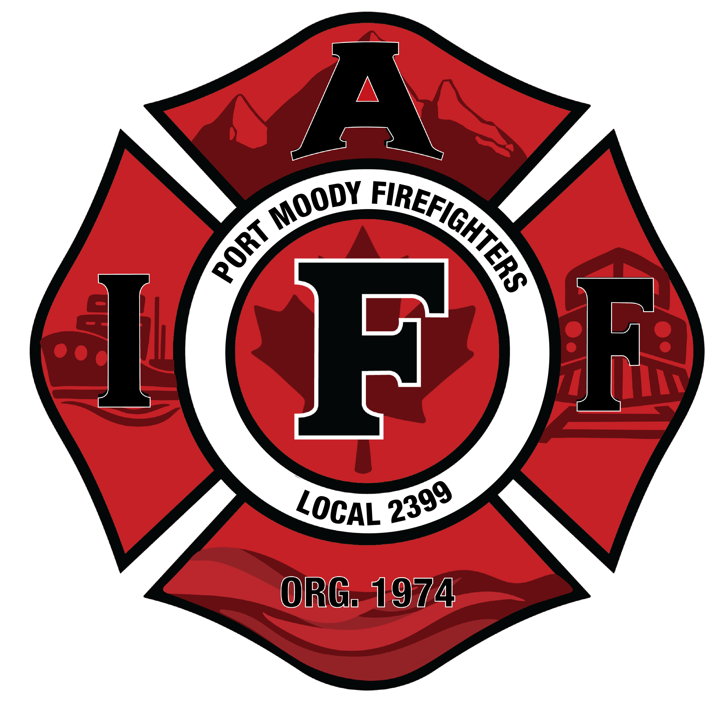
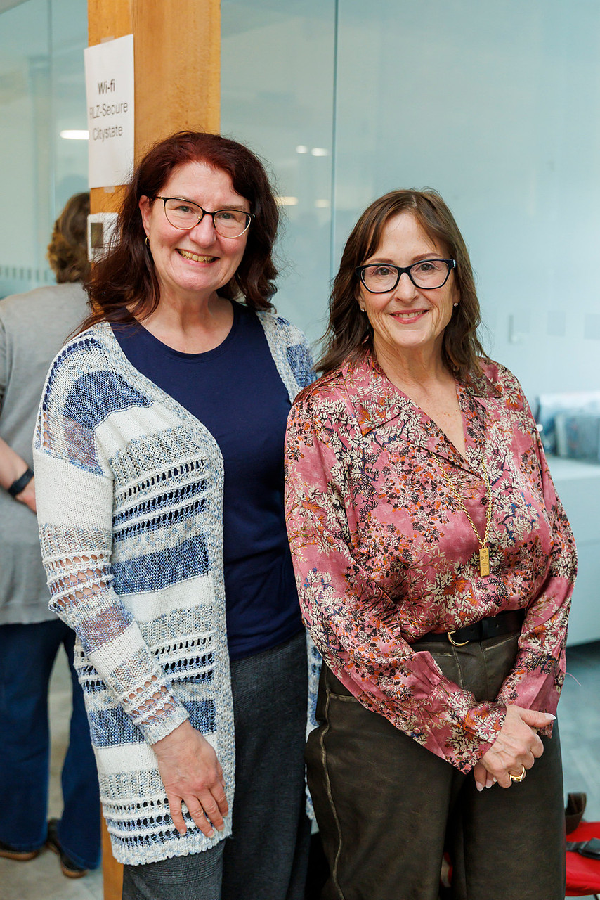
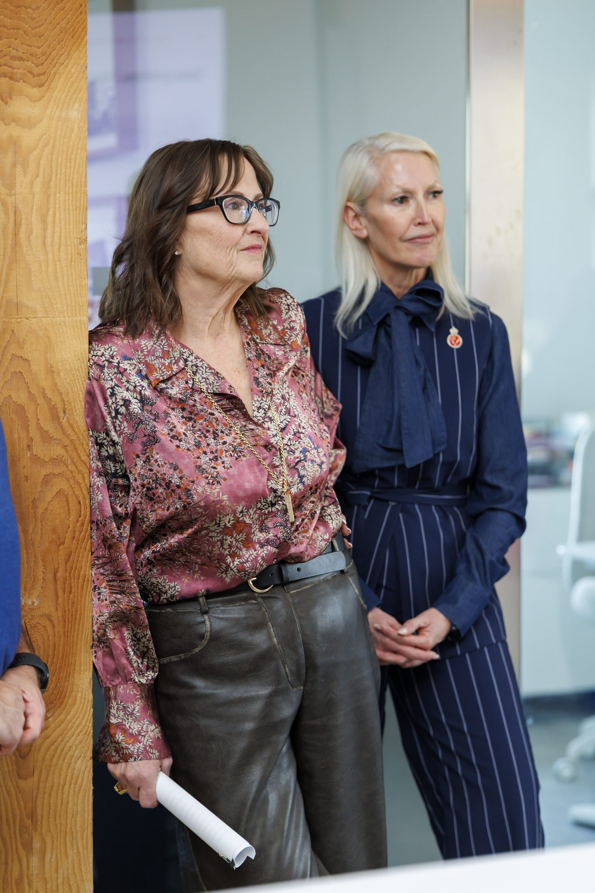

Endorsements
The community endorses Meghan Lahti.
Organizations, community leaders, and neighbours who know Meghan and are standing with her in this campaign. These are their own words.
Organizations
Groups that work with Meghan.

“Over the last four years as Mayor, Meghan has consistently shown support for public safety and as such Port Moody Firefighters Local 2399 is proud to support Mayor Lahti in the upcoming election.”
Local President, Port Moody Firefighters, IAFF Local 2399
“As President of the Port Moody Soccer Club, I am proud to endorse Meghan Lahti for Mayor of Port Moody.”
“As President of the Port Moody Soccer Club, I am proud to endorse Meghan Lahti for Mayor of Port Moody. Meghan has been a steadfast friend and champion of our club for many years, consistently showing up for our players, families, and volunteers.”
“Her leadership was instrumental in bringing the Inlet Field redevelopment project across the finish line. A transformative investment in youth sport and community space that will benefit Port Moody for generations. She also led the effort to name the new pitch Bob Favelle Field, honouring one of our club's most dedicated and long-serving members, and demonstrating the kind of thoughtful recognition that makes our community special.”
“Beyond infrastructure, Meghan has been a consistent advocate for our programs at City Hall, working to ensure that soccer, and youth sport more broadly, has the facilities, support, and visibility it deserves in Port Moody. She understands that strong recreational programs build strong neighbourhoods, and her record reflects a genuine commitment to the families who call this city home. I encourage residents to join me in supporting Meghan Lahti for Mayor.”
Matthew Campbell, President, Port Moody Soccer Club
“Mayor Meghan Lahti is officially endorsed by the New Westminster & District Labour Council, representing working people across the region.”
New Westminster & District Labour Council


Community voices
Neighbours, colleagues, and former officials.
“Meghan has reestablished pride and respect for the City of Port Moody during her first term as Mayor. Once again, I am proud to walk the streets of our beautiful city.”
“I worked with Meghan on City Council from 1996 to 2011, and was always impressed with her solution-oriented approach and passion for Port Moody and the people who live here. Her commitment to the community continues in her role as Mayor where she has shown good governance through thoughtful and collaborative leadership.”
“Meghan has reestablished pride and respect for the City of Port Moody during her first term as Mayor. Once again, I am proud to walk the streets of our beautiful city.”
“A natural leader, Meghan is consistently open to all views, is a keen listener, and as a result, has created a cohesive, functioning council again.”
“In the 20+ years I've known her, Meghan has always demonstrated a sincere, devoted commitment to this city, its residents, and our beautiful natural surroundings. A natural leader, Meghan is consistently open to all views, is a keen listener, and as a result, has created a cohesive, functioning council again.”
“Her commitment to this community is long and deep, and evidenced by her stellar record of accomplishments as councillor and mayor. Her weekly open door policy at City Hall for residents to meet her one-on-one is just one example of her receptiveness to the needs and concerns of PoMo residents.”
“I am pleased to endorse her to bid to lead our city over the next 4 years.”
“I fully endorse Meghan to carry on for another four years and look forward to a Council that can speak freely at the council table.”
“My wife Barbara and I have lived in Port Moody for over 50 years. That being said, I have seen a lot of Mayors come and go. I have seen the best as well as the worst. I also spent 9 years on council which gives me a pretty good perspective on what it takes to make a good mayor.”
“In my opinion the best Mayors Port Moody has seen all have the same two attributes, a history of community involvement followed by years (at least 2 terms) serving as a City Councillor. Meghan Lahti is one of those people.”
“I first met Meghan over 25 years ago when she was involved with girl guides as well as the president of Golden Spike Days. She has gained knowledge and experience through her many years on Council as well as this past term as Mayor.”
“As the leader of Council the Mayor must bring together a council of independent thinkers who, while able to get their point across, do so in a respectful manner. Meghan has done an exceptional job in this regard. I fully endorse Meghan to carry on for another four years and look forward to a Council that can speak freely at the council table.”
“What stands out most about Meghan is that she genuinely cares about people.”
“I am honoured to offer my wholehearted endorsement of Mayor Meghan Lahti.”
“I have known Meghan for many years. First as a neighbour after my family moved to Port Moody in 2009, then as a friend, and ultimately as a Mayor whose leadership I have deeply admired and appreciated. Over the years, I have witnessed firsthand her unwavering commitment to the people of Port Moody and the integrity with which she approaches public service.”
“What stands out most about Meghan is that she genuinely cares about people. She listens carefully, makes time for residents, and treats everyone with respect and dignity regardless of their background or perspective. In an era where political discourse at every level has become increasingly polarized and adversarial, Meghan has consistently brought a calm, thoughtful, and steady presence to our community.”
“Port Moody has faced significant tensions surrounding growth, development, and the future direction of our city. Through these challenges, Meghan has worked hard to encourage respectful dialogue, civility, and meaningful communication between differing viewpoints. She understands that communities thrive not when everyone agrees, but when people feel heard, respected, and included in the conversation.”
“I have also been especially impressed by her connection to youth in our community. I witnessed this at a Community Leader Appreciation event at Seaview Elementary, where she engaged with students with remarkable patience, kindness, and attentiveness. She answered every student's question thoughtfully and spoke to children with the same respect she offers long-standing community members. That ability to make people feel valued, regardless of age or status, speaks volumes about her character.”
“Beyond her leadership, I deeply appreciate Meghan's love for Port Moody itself: its history, natural beauty, and unique sense of community. She thinks long-term, balancing present needs with the responsibility we hold toward future generations. At a time when many leaders are swept up in division, fear, and reactionary politics, Meghan remains grounded, compassionate, and future-focused.”
“As a long-standing community volunteer, philanthropist, parent, business owner, Board Member of the Port Moody Arts Centre (2024-2026), and member of the City of Port Moody's Arts, Culture and Heritage Committee, I do not offer this endorsement lightly. I believe Meghan Lahti represents the kind of leadership our community needs: thoughtful, honest, kind, and deeply committed to the well-being of Port Moody and its people.”
“I am proud to endorse Mayor Meghan Lahti and strongly support her continued leadership for our city.”
“Meghan possesses the exact blend of experience, leadership, and integrity necessary to move Port Moody forward.”
“As a long-time resident and local business owner of Port Moody, I am writing to enthusiastically endorse Meghan Lahti for re-election to the office of Mayor.”
“Throughout their career in public service, I have had the opportunity to directly observe Meghan's dedication, integrity, and unwavering commitment to serving our community. They have consistently demonstrated a profound ability to listen to constituents' concerns and translate them into effective, actionable policies.”
“Their vision for our city strongly aligns with the needs of our families and neighbors. Meghan has been a steadfast champion for sustainable economic growth, improving local parks and recreation and ensuring reasonable residential developments.”
“I have personally witnessed their hands-on leadership over the past three years. This experience underscores their transparency, inclusivity, and genuine passion for public service.”
“Meghan possesses the exact blend of experience, leadership, and integrity necessary to move Port Moody forward. Therefore, I confidently recommend them for re-election as Mayor.”
“I urge all members of our community to join me in supporting Meghan in the upcoming election. Together, we can shape a brighter, more prosperous future for our city.”
“Common sense and sensibility is what Port Moody needs, and that's why I'm voting for Mayor Lahti.”
“As a resident of Port Moody I am happy to endorse Meghan Lahti towards a new term as Mayor of the City of Port Moody. Mayor Lahti has proven to lead city council with a sensible approach that encourages a steady and moderate growth a small city needs in the current economic and social climate.”
“Growth of every city is inevitable and Port Moody is no exception. It is time to re-establish the city as the City of the Arts once again and encourage small business sustainability while recreating the charm of the city, which I have confidence in Meghan to do so.”
“Encouraging our younger generation to participate brings new possibility and this is also something that Meghan has championed. Common sense and sensibility is what Port Moody needs, and that's why I'm voting for Mayor Lahti.”
“Mayor Lahti is a person of exceptional kindness, generosity, and sincere caring.”
“I am pleased to offer my full support for Mayor Meghan Lahti in her bid for re-election as Mayor of Port Moody.”
“As a resident of Port Moody for over 28 years, I have personally witnessed Mayor Meghan Lahti's dedication, responsiveness and general commitment to those she serves. She is always willing to listen to resident's concerns privately, in her office, or at council meetings, and most importantly, she acts not just in words but through concrete results. She is improving our safety, strengthening our neighbourhoods, and has done an incredible job having the pressure of our provincial government dictating growth directives with transparency, and commitment to both the province and Port Moody residents.”
“She has always demonstrated her commitment to serving the community with integrity, transparency, and a clear vision not just for now, but for our future. She has not only addressed immediate challenges but is constantly laying the groundwork for long-term growth and sustainability. Our current mayor's collaborative approach with local businesses, organizations, and residents has strengthened our community during her terms as our mayor.”
“In a time when strong, intellectual leadership is needed to run our council and city, Mayor Meghan Lahti has proven herself not only capable but deserving of our votes for continued leadership of our community.”
“Mayor Lahti is a person of exceptional kindness, generosity, and sincere caring. This is evident in every interaction and initiative she takes on. Always present at our community events or representing our community with her knowledge and concerns at functions at all levels of government.”
“Lastly, what sets Mayor Meghan Lahti apart is her unwavering dedication to putting the needs of Port Moody first. She leads with transparency, integrity, empathy, and has for over 28 years of public service shown a strength in logic of financial responsibilities, making decisions carefully to ensure fiscal accountability for long-term sustainability.”
“I am happy to endorse Mayor Meghan Lahti, one of the longest serving council members in Port Moody's history, for re-election to lead us all with her experience, compassion, accountability, and transparency. We would continue to benefit from her leadership of our council.”
“As Port Moody continues to grow and evolve, Meghan has worked hard to ensure the city maintains the character, culture, and sense of community that make it so special.”
“As both a resident of Port Moody and someone who has known Meghan Lahti for many years, I am proud to support her as Mayor of our city. Meghan genuinely cares about Port Moody and the people who call it home. She leads with transparency, compassion, and responsiveness, and she has shown time and again that she is willing to step up, listen, and take action when it matters most.”
“As Port Moody continues to grow and evolve, Meghan has worked hard to ensure the city maintains the character, culture, and sense of community that make it so special. Her leadership reflects a thoughtful balance of progress and preservation, always with the best interests of residents at heart. She is dedicated, hardworking, and deeply invested in the future of this community, and I believe Port Moody is stronger because of her leadership.”
“She is approachable and listens respectfully to the concerns of residents. That is exactly what a city needs: a mayor who remains connected to the people she serves and who is truly one of us.”
“Meghan Lahti has always come across to me as a respectful, thoughtful, and dedicated leader with a genuine passion for serving our community. Her commitment to strengthening the role of mayor and working to make Port Moody an even better place to live is evident in the care and dedication she brings to her work.”
“She is approachable and listens respectfully to the concerns of residents. That is exactly what a city needs: a mayor who remains connected to the people she serves and who is truly one of us.”
“As a resident of Port Moody, I feel fortunate to have her leading our city. It is clear that she genuinely loves this community, and that passion shines through in all that she does.”
“Mayor Meghan Lahti has been a positive and inspiring presence in our community.”
“Mayor Meghan Lahti has been a positive and inspiring presence in our community. We were honoured to have her as a guest speaker at our inaugural Women Rising event last year, where she shared thoughtful insights on leadership, community, and creating opportunities for women to thrive. Her dedication to service, collaboration, and building a stronger community continues to make a meaningful impact.”
“Meghan is visible at numerous events throughout the year and listens to the issues of the day.”
“In the past four years, The City of Port Moody has experienced a Council where at least 4 of the 7 members see a vision for our City to form a basis to deal with pressing issues. Leading this council is the Mayor, Meghan Lahti, as we entered into a critical time in the City's growth. We, the residents, need to see that a strong Council is elected this fall who are dedicated and willing to direct this growth and not be narrow minded and driven by small self interest groups. Meghan is visible at numerous events throughout the year and listens to the issues of the day.”
“Meghan has assured me that under her direction with a new council of like minded people, a focus will turn back to issues impacting our City such as Property Taxes out of control, exploring new avenues for tax revenue, turn a focus to a significant part of our community, Senior Citizens and start providing infrastructure to meet their needs, size and efficiency of City Management, Property development delays and many other concerns to meet the future needs of our residents.”
“In recent years I have been involved in giving back to my community of Port Moody and when the need arises for assistance, Meghan has always been there to assist where possible. It therefore gives me great pleasure as a resident of Port Moody to endorse Meghan Lahti in the upcoming election for Mayor.”
“Meghan Lahti is a true leader and a solid mover of our City's interests.”
“It is with great pleasure that I write this letter of endorsement in support of Meghan Lahti as our Mayor going into our upcoming new term of office.”
“Meghan has led our Council and our City through some very difficult times, all the while remaining open to hearing from residents, either directly through regular open-door face to face weekly meetings at City Hall or through the many other means of social interaction.”
“Meghan represents our City at so many countless events, from openings through to serving on various boards, all the while being very professional and as a consequence has gained the respect of our Tri-City Mayors and beyond, all of which of course is very helpful, especially where collaboration is required. Keeping in a similar spirit, Zoë Royer our federal MP representative has worked together with Meghan over the years throughout several terms of Council when they both served as Councillors on our Port Moody Council of the day.”
“Similar to our Port Moody Police motto of ‘No Call Too Small’ Megan is 100% attentive and reliable.”
“I've had the privilege of seeing Meghan at work being handed a difficult task where the choice was to either walk away and ignore the issue or confront the matter directly, regardless of the risk of possible political ire, all with the end goal of protecting the integrity and reputation of the workings of our City…”
“In other words, Meghan is rock solid in protecting our City from Strategic risk, Operational risk, Financial risk and finally Compliance risk!”
“Certainly, given the times we are all currently facing, we are so better off to have a Mayor that has a life-time of experience to draw upon and who at the same time also carries the qualities of integrity and strength of character, both of which Meghan has in spades as has been proven over Meghan's multi-year time in serving our Community.”
“Meghan Lahti is a true leader and a solid mover of our City's interests.”
“She asks tough questions, listens before she decides, and when she decides, she explains why.”
“I've watched Meghan Lahti work through some of the hardest files Port Moody has faced, and she doesn't flinch from them. She asks tough questions, listens before she decides, and when she decides, she explains why. That's rarer than it should be.”
Add your voice
Endorse Meghan.
If you know Meghan and want to add your name, write a few sentences below. With your permission, we may share your words on this page. We will reach out before publishing anything.
Thank you.
Your endorsement is in. Someone from the team will be in touch before anything is published.